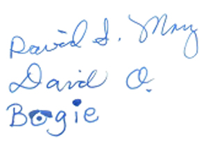

The weather in Laguna’s fine,
No need to dodge the sleet and flurries,
Closing out two thousand nine,
We’ve left behind all last year’s worries.
You may have missed our card last year,
No doubt because ‘twas never sent,
Things were rather hectic here,
Our relocation left us spent.
But after all the aggravation,
Our home we feel is now unmatched,
To garner last year’s situation,
Last year’s poem please find attached.
This year the theme was education,
High school first then college bound,
In June there was a graduation,
Friends and family all around.
Sage Hill’s David’s school of choice,
Just getting in was doing well,
Yet here he learned to find his voice,
To learn, to grow and to excel.
Aunt Natalie and Cousin Sue,
Flew in to join the celebration,
The Keown clan and Myron too,
Joined us in the congregation.
This happy high school culmination,
Was just a part of Binks’ plan,
Eleven schools across the nation,
Were targets of his college scan.
For months the application stress,
Of S.A.T.s and essay prose,
Felt like just a giant mess,
As the process came to close.
We flew to schools around the nation,
Got into eight but then which one?
He tried to find the right sensation,
Before the college search was done
Champlain College won the day
Though UPS was also great,
But boy Vermont is far away,
Though both indeed are out of state.
Father’s Day this year was grand,
Travelling East went Binks and Dad,
To Falling Waters first as planned,
Then to Deb and Karen’s pad.
It was for Dad a priceless time,
Kids and grandkids gathered ‘round,
A gathering he found sublime,
A missing piece together found.
We journeyed next to visit Nat,
For voice camp and a brief respite,
Rested with her dog and cat,
Saw Robb and Julie out one night. |
Back at home Laguna Beach,
Proved to be the perfect place,
For Debbie’s David’s surprise speech,
Popped the question, made his case.
Strolling through the park that day,
Unleashing our conspiracy,
Rose petals spelled out on the way,
“Debbie, will you marry me”.
Then we travelled to Vermont,
David’s first day at Champlain,
Though this was all that we could want,
Still, a bittersweet refrain.
For Shannon and her long time beau,
We held a festive wedding gala,
Bride and groom were all aglow,
With all at our Casa Querida.
It was a perfect wedding day,
Lest I forget then let me hasten,
Amidst the fun let’s also say,
Welcome to the family Jason.
Afterwards ‘twas parents day,
Seeing Binks for just a weekend,
Thanksgiving week he came our way,
Perhaps these trips portend a trend.
A few days down in Mexcio,
Put our lives somewhat in order,
But as all of our travels go,
We always count on Bogie’s boarder.
Bogie loves to play and walk,
His favorite place is on the beach,
He often stops to smell and gawk,
Knowing we are within reach.
When away then Joni stays,
To be with her old canine soul,
Or Bogie’s watched in other ways,
Like Charlene in the sitter role.
There were some changes through the year,
Paul and Janis moved away,
Yet Bella Moda brought us cheer,
And treasured neighbors made the day.
Now it’s nearly closing time,
The year is up, the feeling’s fine,
We hope you like this fractured rhyme,
But you can find much more online.
As the year slips to its end,
May all your fears and worries cease,
We hope our wishes will extend,
To joy on earth and lasting peace.

|